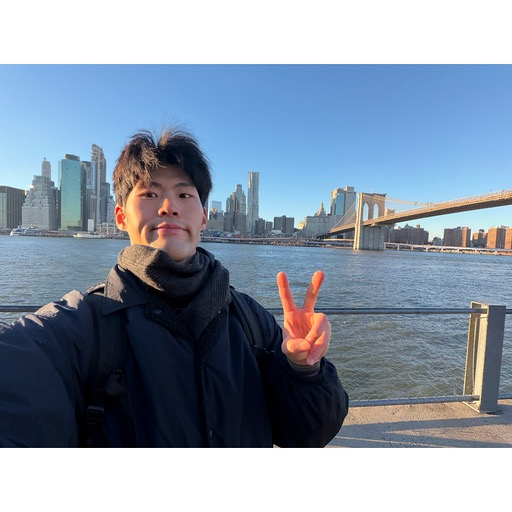
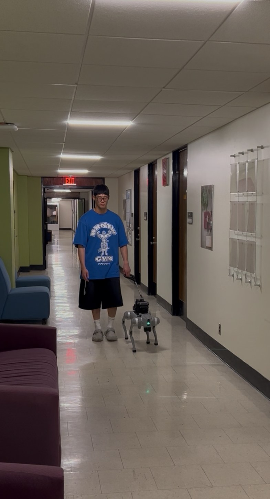
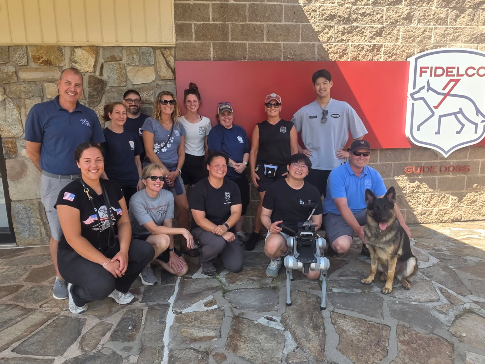
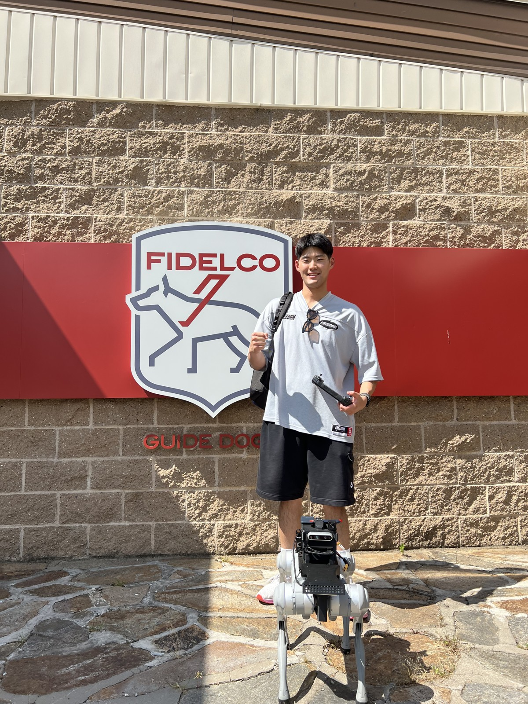
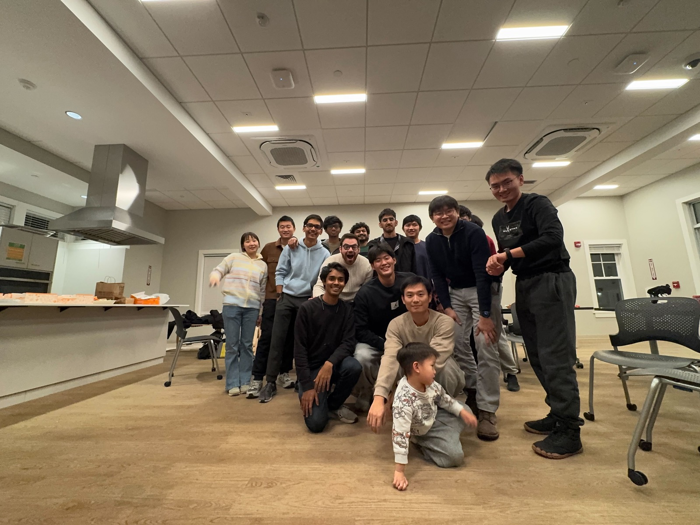
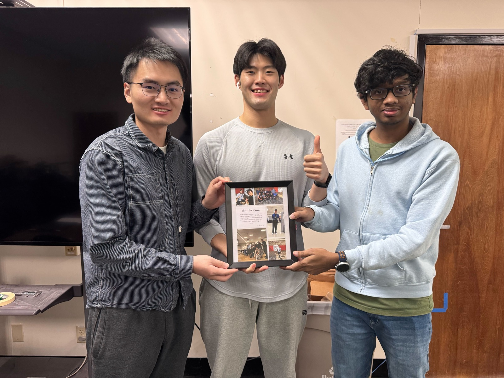
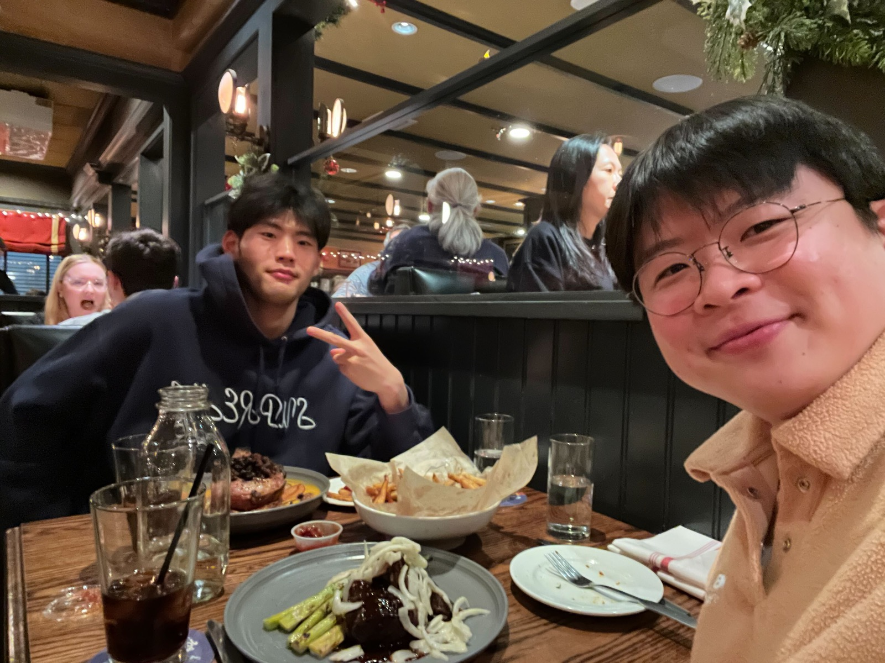

GuideNav: User-Informed Development of a Vision-Only Robotic Navigation Assistant for Blind Travelers
ACM/IEEE International Conference on Human-Robot Interaction (HRI), 2026
🏅 Systems Paper Honourable Mention

Robotics & AI researcher building robots that move and assist in the real world.
I'm a final-year B.S. student in Mechanical Engineering at DGIST (GPA 3.96/4.30, magna cum laude), currently a researcher in the DRCD Lab at KAIST with Prof. Haewon Park. My work spans humanoid control, assistive robotics, and perception — from MCTS-based humanoid soccer planning to vision-only guide-dog robots for blind and low-vision navigation.
Previously a Visiting Researcher at UMass Amherst (DARoS Lab) with Prof. Donghyun Kim, and an exchange student at UC Berkeley.
* denotes my contribution as a co-author.
ACM/IEEE International Conference on Human-Robot Interaction (HRI), 2026
🏅 Systems Paper Honourable Mention
IEEE International Conference on Robotics and Automation (ICRA), 2026
🏅 Best Paper Award Finalist — Field and Service Robotics
Undergraduate Researcher · Advisor: Prof. Haewon Park · Daejeon, Korea
Retargeting human soccer motions to a 27-DoF KAIST humanoid (GMR) and building a two-layer MCTS + motion-matching controller for real-time (30 Hz) dribbling and obstacle breakthrough.
Visiting Researcher · Advisor: Prof. Donghyun Kim · Amherst, MA, USA
Assistive robotics for blind and low-vision navigation (GuideNav). Collected and processed real-world tactile walking surface indicator (TWSI) data and built synthetic + real datasets for perception.
Undergraduate Researcher · Advisor: Prof. Sehoon Oh · Daegu, Korea
Robotics and AI research on perception and dataset-related tasks for robotics applications.
GPA 3.96 / 4.30 · magna cum laude · Exchange: UC Berkeley (2024)
Two-layer planner — receding-horizon MCTS over a motion-matching (kNN) layer — for a 27-DoF humanoid. Real-time control at 30 Hz (~250 sims/step), dribbling past static cones and moving defenders with step-overs and Marseille turns in MuJoCo.
Vision-based tactile-paving detection (YOLO, SAM2) reaching 96% accuracy in real-world deployment (Boston subway). User studies with visually impaired participants on Unitree Go2. Co-authored HRI 2026 & ICRA 2026 papers.
An assistive robotic device for grasp augmentation. Received the top evaluation at the DGIST poster session.
Real-time control and MuJoCo simulation for manipulators. Resolved instability from discrete-time dynamics mismatch to achieve stable control.
Hands-on testing of our guide-dog navigation robot, plus fieldwork at the Fidelco Guide Dog Foundation observing real guide-dog training — informing the GuideNav / GuideTWSI projects.



Everyday moments with the DARoS Lab during my visiting research at UMass Amherst.


